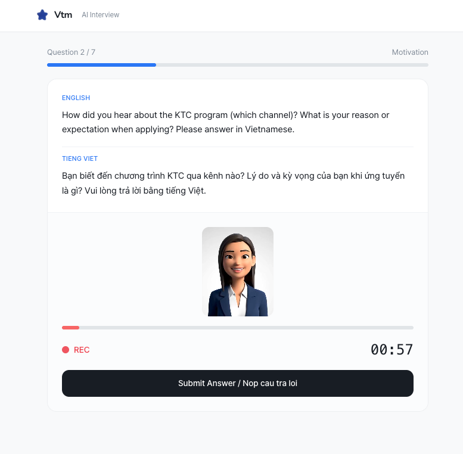
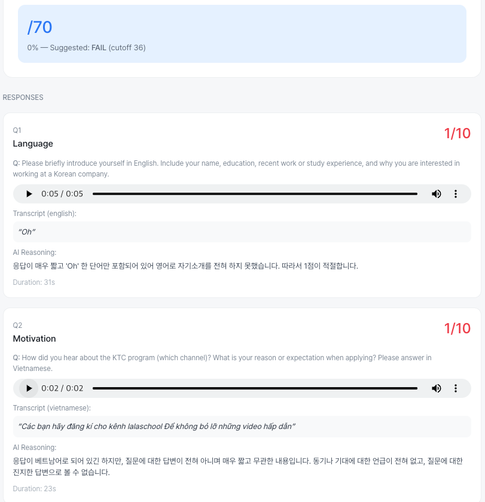
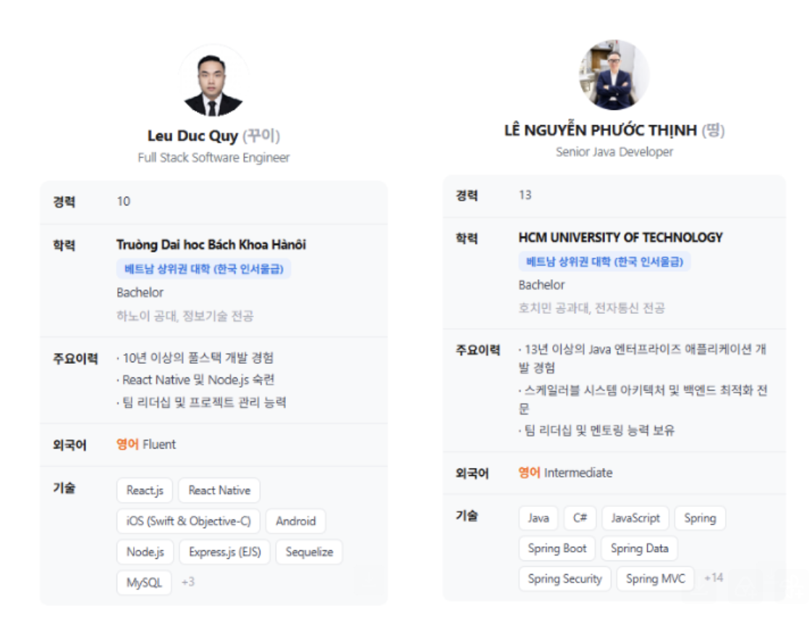

| 구분 | KPI | 2Q | 3Q | |||||
|---|---|---|---|---|---|---|---|---|
| 4월 | 5월 | 6월 | 7월 | 8월 | 9월 | |||
| 웍스피어 | ① 기업 확보 개사 |
목표 | 0 | 18 | 21 | 30 | 30 | 30 |
| 현황 | 10 | 20 | 1 | 8 | - | - | ||
| 달성률 | - | 111% | 5% | 27% | - | - | ||
| ② 채용 TO 확보 건 |
목표 | 0 | 35 | 41 | 30 | 35 | 35 | |
| 현황 | 15 | 26 | 2 | 23 | - | - | ||
| 달성률 | - | 74% | 5% | 77% | - | - | ||
| 멋사 | 채용 확정 (명) | 3 | 0 | 7 | 3 | 1 | - | |
| TO 대비 전환율 | 20% | 0% | 350% | 13% | - | - | ||
| ③ 매칭 확정 멋사 & 웍피 (명) |
목표 | 0 | 25 | 25 | 20 | 30 | 40 | |
| 현황 | 3 | 1 | 12 | 21 | 4 | - | ||
| 달성률 | - | 4% | 48% | 105% | 13% | - | ||
| 관리 항목 | 정의 | 현재 | 집계 주기 |
|---|---|---|---|
| 매칭 유지 인원 | 현재 근무 중인 인원 | 37명 | 상시 |
| 평균 근속 개월 | 입사 후 근무 지속 기간 | 2.4개월 | 상시 |
| 근속 유지율 | 매칭 41명 중 근무를 이어가는 비율 | 92.7% | 상시 |
| 기업 이탈률 | 사업 자체를 중단한 기업 비율 | 0% | 상시 |
| 기업 만족도 | 기업 대상 설문 (5점) | 4.6점 | 입사 1개월, 3개월 |
| 인재 만족도 | 인재 대상 설문 (5점) | 4.4점 | 입사 1개월, 3개월 |
| 비중 | 보류 사유 | 상세 내용 | 전환에 미치는 영향 |
|---|---|---|---|
| 55% | 인식 부족 | 원격 근무 형태가 낯설고 언어와 문화 장벽에 부담을 느낌 | 미팅은 하지만 전환 안 됨 |
| 32% | AI 활용 확산 | AI 활용 증가로 채용 결정 취소, 단순 업무에서 두드러짐 | 미팅 자체가 성사되지 않음 |
| 13% | 인건비 지원 희망 | 일경험, KDT 등 한국인 인턴을 무료로 쓸 수 있는 제도가 많음 | 무료 제도 대비 설득 한계 |
| 구분 | 대상 | 판단 기준 | 전환 리드타임 |
|---|---|---|---|
| 세그먼트 A | 채용 소외 기업 | 인건비 부담으로 채용을 보류 중인 기업 | 두 세그먼트 간 차이 없음 |
| 세그먼트 B | 현지 진출 기업 | 베트남에 법인이나 거점을 두고 있는 기업 | |
| 실제 전환층 | 채용과 인건비 절감이 모두 시급한 기업 | 공고를 장기간 또는 반복 게재하고 충원하지 못한 기업 | 7.6일 |
| 변경 전 | 변경 후 |
|---|---|
| [사업운영비] 이력서 및 포트폴리오 첨삭 | [기관운영비] 인건비 |
| [사업운영비] AI 면접 [사업운영비] AI 코딩테스트 |
[사업운영비] 온라인 홍보비 |
| 감액 | 증액 |


